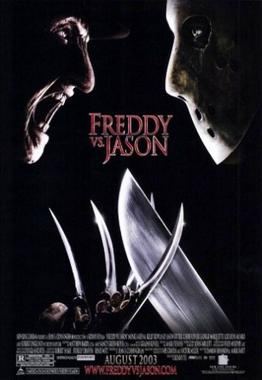

| Freddy VS Jason | |
|---|---|
|  | |
| Film | Freddy VS Jason |
| source cerita: | wikipedia |
| Tanggal rilis | 15 Agustus 2003 |
| Bahasa | Bahasa Inggris |
| Durasi | 98 menit |
Sejak kekalahan terakhirnya, Freddy Krueger telah berada di Neraka dan tidak dapat mengganggu mimpi anak-anak karena orang dewasa di Springwood telah melakukan segala cara untuk memastikan anak-anak mereka telah melupakannya; semua penyebutan tentangnya telah dihapus dari catatan publik, dan setiap anak yang memimpikannya secara paksa dirawat di Rumah Sakit Jiwa Westin Hills untuk menahan penyebarannya; mereka diberi obat penekan mimpi Hypnocil. Freddy membangkitkan Jason Voorhees dan muncul sebagai ibu Jason, Pamela Voorhees, untuk memanipulasinya agar berpikir bahwa ibunya ingin dia pergi ke Elm Street dan membunuh. Ini akan menciptakan ketakutan di antara penduduk kota bahwa Freddy telah kembali, yang akan memungkinkannya untuk mendapatkan kembali kekuatannya.
Lori Campbell tinggal bersama ayahnya yang sudah janda. Saat menginap bersama teman-temannya, Kia, Gibb, pacar Gibb yang suka menyiksa Trey, dan temannya Blake, Jason membunuh Trey lalu membunuh Blake dan ayahnya. Polisi menyebutnya pembunuhan -bunuh diri , dengan harapan bisa menyembunyikan kepulangan Freddy dari kota.
Mantan pacar Lori, Will Rollins, dan temannya Mark Davis, yang merupakan pasien psikiatris tak sukarela di Westin Hills karena kontak mereka sebelumnya dengan Freddy, melihat laporan berita tentang pembunuhan yang mendorong mereka melarikan diri untuk memperingatkan Lori tentang Freddy. Lori dan teman-temannya menghadiri pesta dansa di ladang jagung malam itu. Freddy mencoba membunuh Gibb dalam mimpi buruk, tetapi Jason membunuhnya terlebih dahulu di dunia nyata dan melakukan pembunuhan besar-besaran di pesta dansa itu, membuat Freddy marah, yang menyadari bahwa pembunuhan berantai Jason akan membuatnya kehilangan korban.
Para sahabat melarikan diri dari pesta bersama si kutu buku sekolah Charlie dan si tukang ganja Bill. Will dan Lori menyaksikan Mark dibunuh oleh Freddy. Deputi Scott Stubbs membantu para remaja itu. Mengetahui tentang Hypnocil, mereka mencoba mencurinya dari Westin Hills untuk menekan mimpi mereka; namun, Freddy menggunakan Bill untuk membuang obat itu. Jason membunuh Stubbs. Freddy menggunakan Bill yang kerasukan untuk menenangkan Jason, menyebabkan dia tertidur setelah mencabik Bill menjadi dua.
Para remaja menyusun rencana untuk menarik Freddy dari dunia mimpi ke dunia nyata dan memaksanya untuk melawan Jason, membawa Jason yang tidak sadarkan diri kembali ke Camp Crystal Lake di New Jersey . Freddy melawan Jason di dunia mimpi, di mana ia menemukan bahwa Jason memiliki rasa takut tenggelam. Ia menggunakan ini untuk keuntungannya, menyebabkan Jason kembali ke dirinya yang lebih muda. Lori pergi tidur untuk menarik Freddy keluar dan menyelamatkan Jason. Freddy menyiksa Lori dalam mimpinya, mengungkapkan bahwa dia membunuh ibunya. Jason terbangun di Camp Crystal Lake yang sebenarnya dan mengejar para remaja, melukai Charlie hingga meninggal. Lori bangun dan menarik Freddy ke dunia fisik, di mana Jason menghadapinya.
Freddy dan Jason bertarung di seluruh perkemahan, di mana Jason membunuh Kia. Saat Freddy menang, Lori mengalihkan perhatiannya, memungkinkan Jason meninju tubuhnya. Freddy menusukkan parang Jason ke sisinya, dan Jason merobek lengan Freddy yang bersarung tangan. Lori dan Will membakar dermaga, menyebabkan ledakan yang melemparkan Freddy dan Jason ke danau. Freddy memanjat keluar dan hendak membunuh keduanya tetapi ditusuk oleh Jason dengan lengannya yang bersarung tangan, memungkinkan Lori memenggal kepala Freddy dengan parang Jason. Jason, kepala Freddy, dan tubuhnya tenggelam ke dalam danau, tampaknya mati.
Keesokan paginya, Jason muncul dari danau, sambil memegang parang dan kepala Freddy. Freddy mengedipkan mata ke kamera, membuat pemenangnya menjadi tidak jelas.